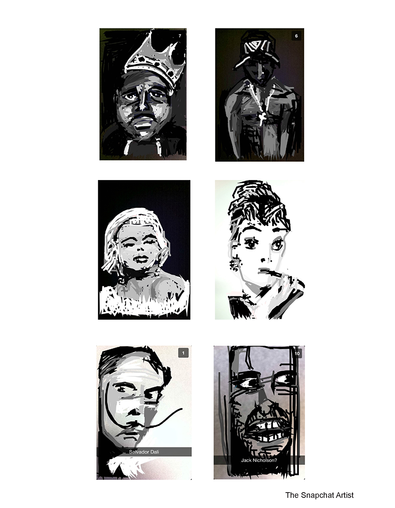
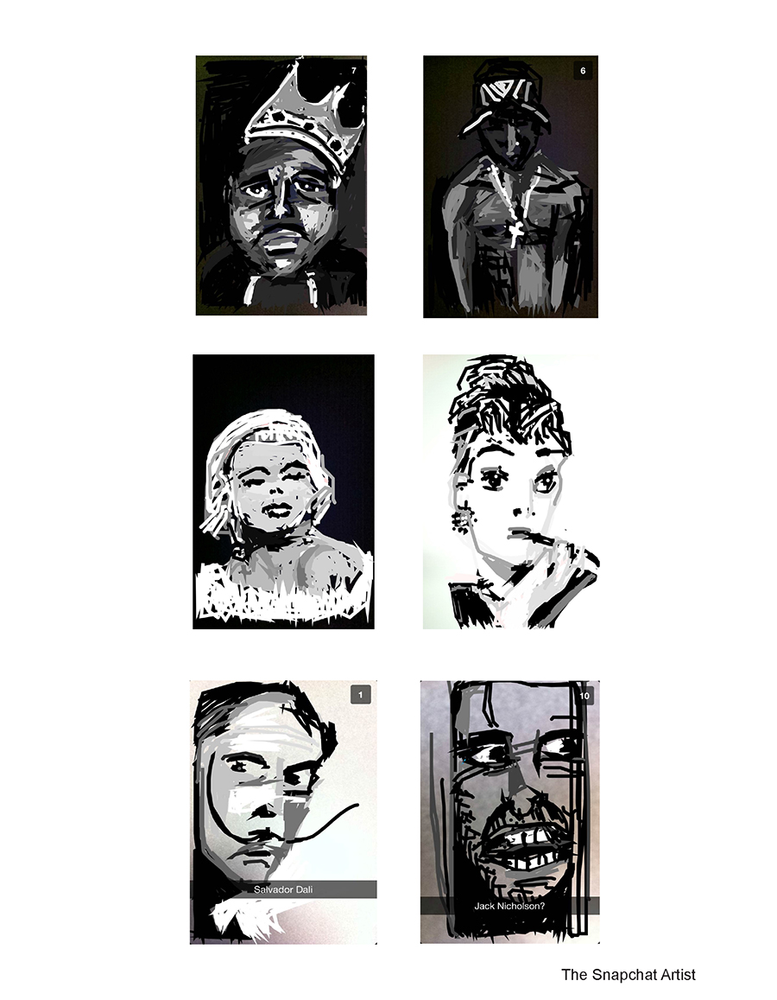
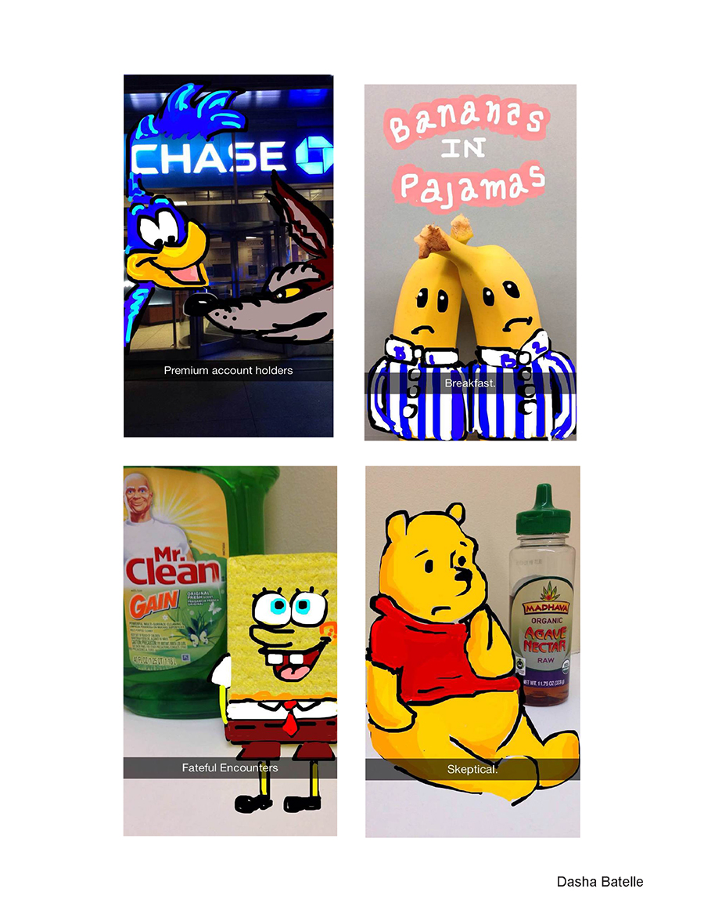
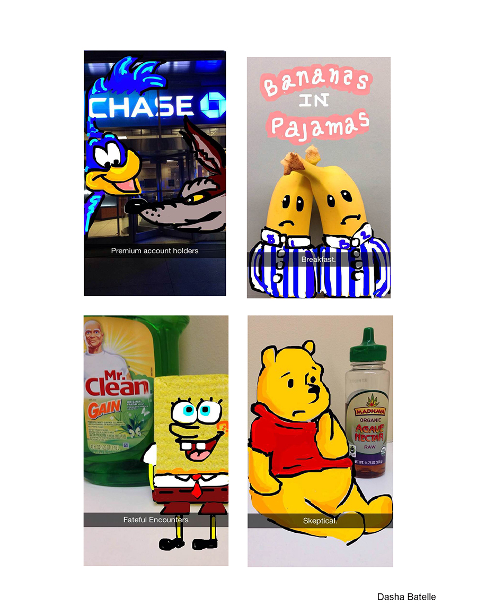

“There are all sorts of ways, articulated and unarticulated, in which the look and feel of newyorker.com is guided by what's on paper.” - Blake Eskin, The 1st web editor of The New Yorker
The New Yorker website was designed with the intent creating a conection between the physical magazine with it's virtual self. The designers were focused on preserving the trademark character that the magazine contains.
One identifying characteristic of The New York magazine is it's use of illustration throughout the magazine, but especially for having illustrated covers. The designers considered this when deciding to incorporate the illustrated man used in the first issue cover. The illustration is used in black and white, not its original color scheme, updating it's look. It is bonded into one with the head type logo on the top of the page. Combining the two was a good way to include the magazines tradition of using illustration into the sites design.
The Irvin typeface, created by art director Rea Irvin is yet another identifyind characteristic of the well-known magazine. The typeface is used throughout the site for headers and other small detail links. In my opinon the typeface is overused on the site, especially on the homepage in particular. Every article heading is using the typeface, which has such a classical and theatrical quality to it. When it is used so much it becomes like listening to the most overplayed song on the radio. Using the Irvin typeface is another way the designer of the site have kept the distinct visiual characteristic and classical feel that the magazine provides.
The Irvin typeface is complimented with the use of the times typeface for the body of the website. The time typeface which is a serif typeface is delicate enough to balance well in combination with the sans-serif typeface Irvin. There is also a third typeface at use on the website that I was unable to track the name of. It is also a san-serif and of similar length and weight distribution to the Irvin typeface which is why it works well on the website. The third typeface is used in bold as well which is an advantage because Irvin does not lend itself to do so as easily.
The color scheme of the website is black, white and minimal use of red. Black, white and red are a classical color scheme which speaks to the classical nature of the magazine. This color scheme, used on the website in particular, acts to age it which is both a benefit and a disadvantge. Although the New Yorker is very centered on its traditions, and this color scheme is expresses that, if they incorporated more modern color scheme the website might appeal to a wider as well as younger audience. A good example og a magazine website which does so is nymag.com, the New York magazine cite. They use a similar black, white and red color scheme but by incorporating modern colors in specific locations it has a more contemporary look.
The layout of the website is clean and functions well to direct the reader. A picture along with the story headline from a variety of catagories flashes for about a minute each in the largest box on the page. This gives a preview of what is to come from the rest of the page, functioning much like the index of a magazine. The rest of the catagories are listed below in a flash-card like format icluding a picture and tittle. Convinent links provide access to other resources the website offers. The clean and simplified layout makes it more easier for the viewer to navigate and read.
Overall The New Yorker website design was well considered. The intent of the designers was to connect the website to the physical magazine. There are various way in which they accomplished to do so, such as use the Irvin typeface, incorporating illustrations and artwork, as well as using a classical color scheme. In this aspect though some of the sucess in achieving their intent proved to also be their drawbacks.

 

 
